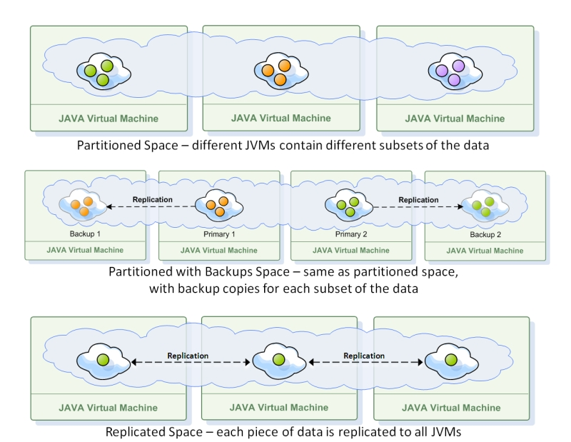
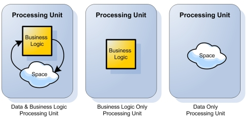

|
Section Summary: This section deals with the internals of the GigaSpaces XAP packaging and deployment unit, namely the processing unit. It explains how to create it and how to run it in the various runtime modes. OverviewThe processing unit is the unit of packaging and deployment in the GigaSpaces XAP platform. This section details the anatomy and details of the processing unit. It describes the various processing unit types, explains its directory structure, deployment descriptor, SLA attributes and how you can debug, run and deploy it on to the GigaSpaces XAP runtime environment. Processing Units - The Packaging & Deployment UnitGigaSpaces applications are composed of one or more processing units. Generally speaking, a processing unit is simply a .jar file which contains your application classes, any jars it depends on, and a deployment descriptor. GigaSpaces XAP deployment configuration utilizes the Spring Framework. A processing unit configuration is actually a Spring framework XML configuration with GigaSpaces-specific namespace bindings to reflect the GigaSpaces specific attributes of the processing unit. Unlike a plain Spring application, a processing unit defines its Service Level Agreement (SLA). The SLA can determine the amount of processing unit instances, the deployment constraints for it (e.g. specific IP range), the topology of the data grid contained in it (see below) and more. When a processing unit is deployed to the GigaSpaces runtime environment, one or more processing unit instances are created and provisioned to the running GigaSpaces containers. The amount of processing unit instances depends on the configuration of the processing unit. In general, there are 3 types of processing units: Data only, business-logic only and mixed processing units (which contain both data and business logic). The data container for processing units is GigaSpaces' in memory data grid (IMDG) implementation, which is called the Space. The space can be accessed via various APIs, and can be deployed in multiple topologies (which determine how the data is distributed across the cluster). It can be replicated (in which case the objects written to it are replicated across the cluster) or partitioned (in which case objects are distributed across multiple instances). If it's partitioned, it may also have backups for each partition.  Data only processing unitsThis type of processing units does not include any business logic, only a Space. The processing unit simply defines the runtime characteristics of the space, i.e. its runtime topology, the number of space replicas/partitions, etc. Business-logic only processing unitsThis type of processing units include only your application's code. Typically, your code interacts with a remote Space (defined by another processing unit), but that's not mandatory. It can even be a plain Spring application context definition. Mixed processing unitsThis type of processing units includes both business logic and a space. Typically, the business logic interacts with a local space instance (i.e. an data grid instance running within the same processing unit instance) to achieve lowest possible latency and best performance. In such processing units, the processing unit state is directly related to that of the space instance it contains. If the space instance is in backup mode, the entire processing unit is in backup mode, which means that the business logic services which access the local space are not active. Upon failover, when the backup becomes primary, the business logic services also kick in and start working.  In recent versions (since XAP 6.6), the processing unit concept has been expanded to include web applications and Mule ESB applications, so you can deploy these types of applications onto the GigaSpaces runtime environment and assign SLA attributes to them. Section Contents
|
| GigaSpaces.com - Legal Notice - 3rd Party Licenses - Site Map - API Docs - Forum - Downloads - Blog - White Papers - Contact Tech Writing - Gen. by Atlassian Confluence |